Эндуро и мотокросс · собственное производство
Как объяснить инженерный продукт без потери технической точности
Для FR-moto связали производство, реальные испытания, подбор деталей и возражение по цене. Получилась не просто витрина: человек понимает, за что платит и какая разработка подходит его мотоциклу.
Исправленный комплект утверждён клиентом и передан на этап публикации.


Маркетинговая задача
Показать ценность детали, которую покупатель сравнивает только по цене
Защита рук или усиленный руль выглядят как простой товар. Но решение принимают по материалу, совместимости, поведению при падении, реальным испытаниям и доверию к производителю.
Что мешало заказать
- технические различия не видны на одной фотографии;
- дорогой продукт сравнивают с дешёвым аналогом;
- непонятно, подойдёт ли деталь конкретному мотоциклу;
- обещания без испытаний не вызывают доверия;
- собственное производство оставалось за кадром.
Как отвечает контент
Производство доказывает экспертизу. Технические посты объясняют материал и конструкцию. Карусель помогает выбрать защиту. Реальные райдеры показывают продукт в деле. Наличие и быстрая отправка переводят интерес в заказ.
Логика: увидеть разработку → понять отличие → снять вопрос цены → проверить совместимость → заказать.
Витрина
Защита рук, усиленный руль и собственные разработки.
Выбор
Совместимость и подробная карусель о защите.
Доверие
Производство, испытания и реальные райдеры.
Цена
Почему инженерная деталь дороже дешёвой дуги.
Действие
Наличие, отправка и вопрос о мотоцикле подписчика.
Точность важнее красивой первой версии
Ошибочную концепцию не прятали — пересобрали
Ранние макеты содержали неподходящую технику и неточные товары. В публичный кейс они не попали: мы используем только исправленный и утверждённый финал.
Что исправили
- дорожную технику заменили на эндуро и мотокросс;
- вернули настоящий логотип и чёрно-жёлтую систему;
- сопоставили каждый товар с текстом;
- уточнили материал: авиационный алюминий 7075;
- заменили райдера и деталь в историях 1 и 3.
Что получилось
Финальный комплект говорит на языке отрасли: правильная техника, реальные изделия, проверяемые характеристики и единая система. Клиент утвердил исправления 5 августа.
Ранние версии от 22 и 27 июля полностью исключены из сайта.
Готовый продукт целиком
План, вся лента, карусели и мини-прогрев
Откройте каждый формат. Все изображения — из финального утверждённого комплекта после отраслевых правок.
10 публикаций · утверждённая последовательность
Последовательность утверждена
План подготовлен для ВКонтакте, Instagram, Telegram и MAX. Темы расположены в утверждённой последовательности.
- Сделано в России: от идеи до хард-тестаПроизводство · доверие
- Защита, которую не жалко проверить двойной курвойПродукт · алюминий 7075
- Как выбрать защиту рук для эндуроПольза · карусель из 7 слайдов
- Защита рук — а чего так дорого?Возражение · объяснить цену
- Руль, который не сломаетсяПродукт · усиленная конструкция
- Заказал сегодня — уехало завтраПредложение периода · наличие
- Гонщики выбирают FR-motoДоказательство · реальное использование
- Встаёт на любой эндуро и кроссПодбор · совместимость
- Три собственные разработкиВитрина · карусель из 5 слайдов
- Признавайся: на чём катаешь?Вовлечение · узнать аудиторию
10 публикаций
Техническая лента без случайных картинок
Для каруселей показаны обложки. Каждый одиночный макет можно открыть крупно.
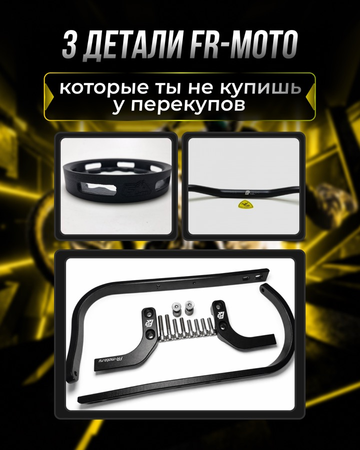
2 карусели · 12 слайдов
Помочь выбрать и показать линейку
Первая карусель объясняет защиту рук, вторая собирает три собственные разработки в понятную витрину.
Публикация 03 · 7 слайдов
Как выбрать защиту рук для эндуро
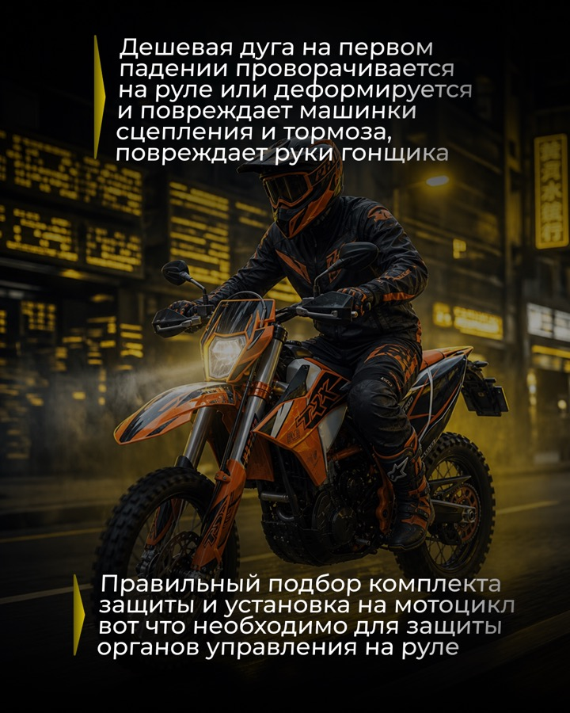
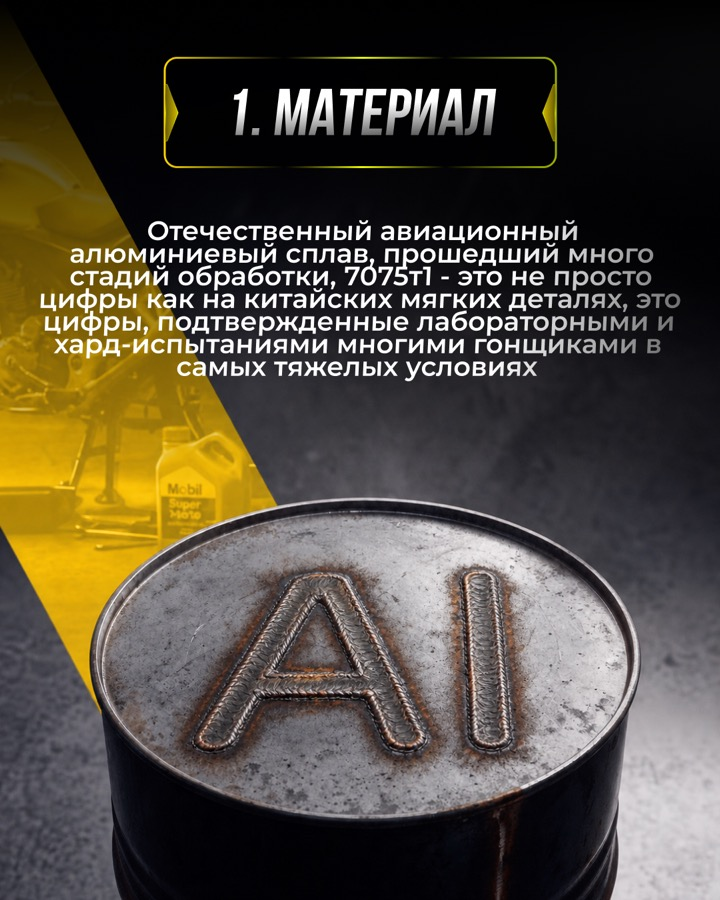
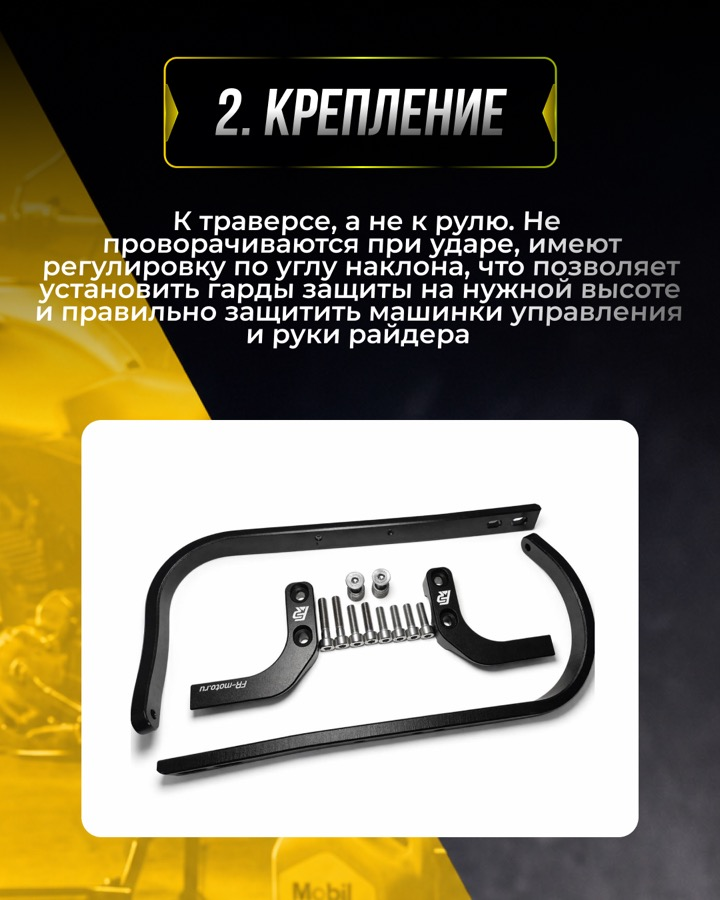
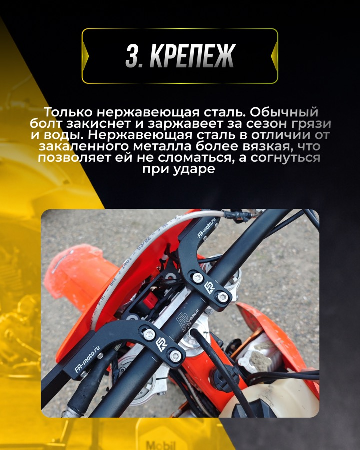
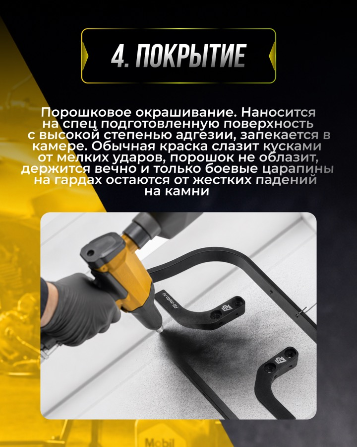
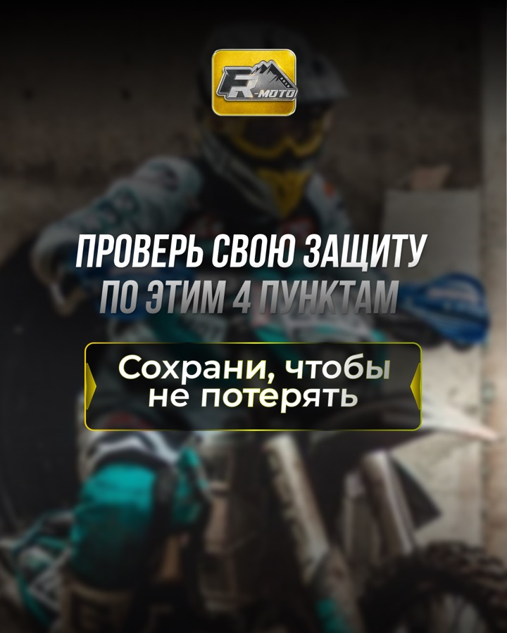
1 / 7
Публикация 09 · 5 слайдов
Три собственные разработки FR-moto
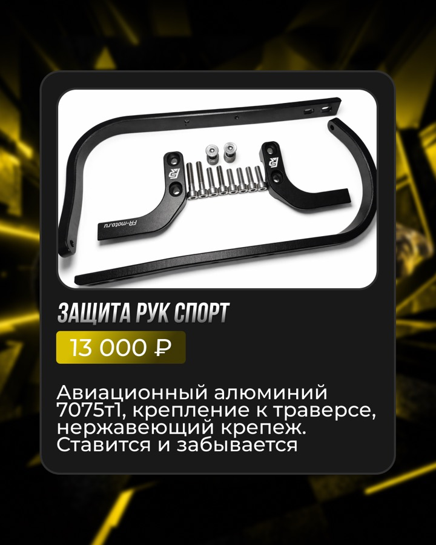
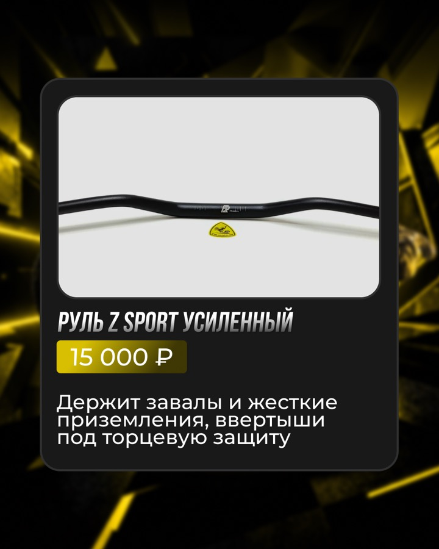
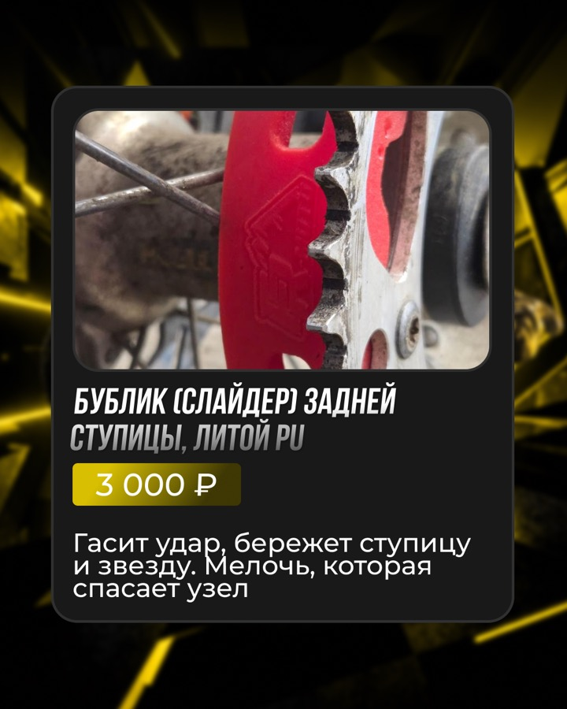
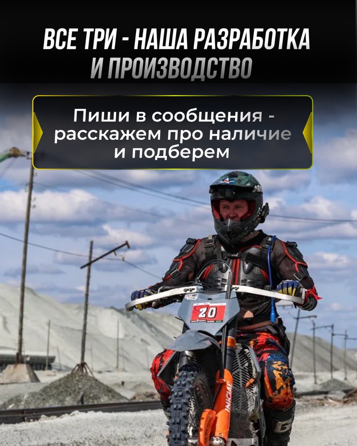
1 / 5
Один мини-прогрев · 5 экранов
От знакомой поломки к объяснению цены
Истории поднимают реальную боль райдера, сравнивают дешёвую дугу с инженерной защитой и ведут к подробному посту.
Итог проекта
Готовый продукт, утверждённый клиентом
На странице видны весь объём, техническая точность, последовательность и качество правок.
Что сделали
- утверждённый исправленный комплект;
- 8 статичных постов и 2 карусели;
- 12 слайдов каруселей и 5 историй;
- 25 финальных изображений;
- подготовка для четырёх площадок;
- передача на этап публикации.
Итог проекта
Кейс показывает утверждённый комплект для четырёх площадок. Фактический выпуск и коммерческие показатели не измерялись.
Цены и условия внутри макетов относятся к периоду проекта.
У вас сложный продукт?
Переведём характеристики на язык выбора клиента
10 постов с маркетинговым планом, текстами и дизайном — от 4 990 ₽.